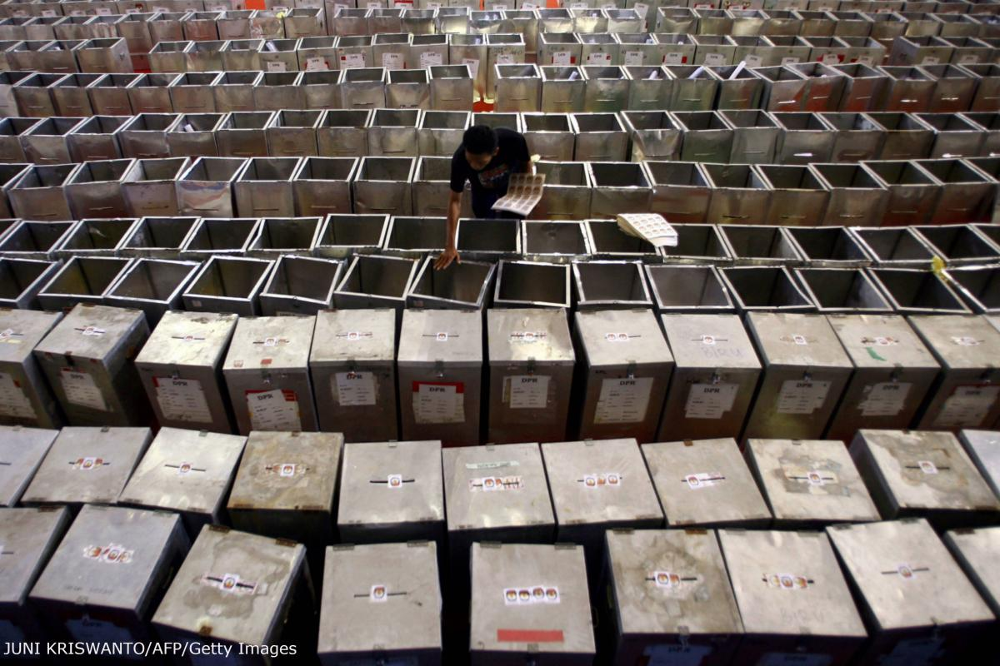

اصول برگزاری انتخابات
در برگزاری هر انتخابات در هر کجای دنیا و با هر قانون اساسی و ساختار سیاسی و شیوه حکمرانی در آن کشور، اصولی وجود دارند که بنیادی به شمار میروند. در واقع برای برگزاری یک انتخابات آزاد، منصفانه و سالم باید ابتداییترین اصول از دسترسپذیر بودن و شفافیت گرفته تا امنیت و انصاف رعایت شوند.
در نبود مبانی اخلاقی، کار رأیگیری در بهترین حالت ممکن است ناکارآمد باشد، و در بدترین حالت توسط نیروهای فاسد یا جهتدار سیاسی مخدوش شود، که در نتیجه آن اعتماد عمومی به فرآیند انتخابات لطمه میبیند.
در این صورت ممکن است مقبولیت عمومی نتایج و تصمیمات مربوط به انتخابات کاهش یابد و از اعتبار آنها کاسته شود. اِعمال اصول دهگانه زیر در موقع برگزاری رأیگیری در حفظ سلامت و اعتبار انتخابات اهمیتی اساسی دارد.

قابل دسترس بودن
برای اینکه همگان بتوانند با رأی دادن از حقوق دموکراتیکشان استفاده کنند، امکان شرکت در انتخابات باید برای همه صاحبان این حق فراهم باشد. قابل دسترس بودن، تقریبا بر همه بخشهای رأیگیری تأثیر میگذارد. ایجاد دسترسی در عین پایین نگه داشتن هزینهها، میتواند سختترین چالش پیش روی نهاد مسئول مدیریت انتخابات باشد. از جمله مسائل مهم در این زمینه میتوان به موارد زیر اشاره کرد:
- ایجاد شعبههای اخذ رأی در مکانهایی که امکان دسترسی آسان و آزادانه واجدان شرایط به آنها فراهم باشد؛
- پیشبینی تسهیلات ویژه برای رأی دادن کسانی که در روز رأیگیری قادر به رفتن به شعب اخذ رأی حوزه انتخابیشان نیستند؛
- تعیین تاریخ و ساعت رأیگیری با در نظر گرفتن مسائلی نظیر ساعت کاری رأیدهندگان؛
- توجه به اینکه ابزار و اطلاعات مخصوص رأی دادن مطابق سطح سواد رأیدهندگان طراحی شده، و تفاوتهای زبانیشان در آنها لحاظ شده باشد؛
- پیشبینی امکانات لازم برای کمک به آن دسته از رأیدهندگانی که معلولیت یا مشکلات جسمی دارند، و یا کمسواد و بیسواد هستند؛
- تعیین مهلت اداری و قانونی برای مراحل مختلف انتخابات (از جمله ثبت نام نامزدها، اعتراض به تصمیمات یا اشتباهات اداری) به منظور ایجاد امکان مشارکت بیشتر عموم.
انصاف
انصاف حکم میکند برای کلیه واجدان شرایط شرکت در انتخابات، و همچنین همه بازیگران سیاسی، فرصت برابر ایجاد شود. برای این منظور، دستکم به وجود مقررات و رویههای علنی و مورد قبول عموم، و اِعمال دقیق، یکدست و قابل بررسی این مقررات نیاز است.
اصل انصاف، شامل جنبههای مختلفی از امکان دسترسی است، از جمله لزوم ایجاد فرصت و امکان رأی دادن و وحدت رویه در رفتار با همه واجدان شرایط رأی دادن، صرفنظر از مکان، توانایی و موقعیت اجتماعی آنها. علاوه بر این، رعایت انصاف به این معناست که نیازهای خاص بخشهای محروم جمعیت رأیدهنده هم برآورده شود.
اصل انصاف شامل جنبههای مختلف شفافیت هم میشود و شفافیت و پاسخگویی در تصمیمات نهادهای مسئول مدیریت انتخابات یا دیگر نهادهای مسئول برگزاری انتخابات را می طلبد.
مفهوم انصاف در مورد نقش بازیگران سیاسی این است که همه آنها به تسهیلات لازم برای نظارت بر فرآیند رأیگیری دسترسی داشته، و حق به چالش کشیدن آن را داشته باشند.
در مدیریت کارهای تدارک و برگزاری انتخابات هم باید در اعطای قراردادهای تأمین اجناس یا خدمات فرصتهای برابر در اختیار همه قرار گیرد، همچنین در فرآیند جذب نیرو به نیازهای زنان، اقلیتها و گروههایی که از نظر فرهنگی در محرومیت هستند، توجه ویژهای شود.
امنیت
تأمین امنیت رأیگیری، مستلزم تضمین این است که کلیه واجدان شرایط بتوانند مطابق انتخاب خودشان و بدون ترس از هرگونه آسیب و تهدیدی رأی بدهند. بازیگران سیاسی هم به ضمانتهای مشابهی احتیاج دارند تا مطمئن شوند میتوانند آزادانه و در فضایی امن به تبلیغ برنامههای انتخاباتیشان بپردازند.
امنیت انتخابات جنبههای مهم دیگری هم دارد؛ مثلا اطمینان از اینکه آرایی که به صندوقها ریخته شده بعد از پایان رأیگیری شمرده میشوند، و نتایج اعلامشده انتخابات انعکاس واقعی و دقیق انتخاب رأیدهندگان در روز رأیگیری است.
در نتیجه برای تامین امنیت انتخابات باید به طور یکسان هم اقداماتی برای جلوگیری از سرقت، انهدام بدون مجوز، دستکاری و مخدوش کردن اسباب، سیستمها و رویههای انتخاباتی، انجام پذیرد و هم برای جلوگیری از اضافه کردن دادههای اشتباه یا غیرمجاز و اقدام به رأی دادن از روشهای غیرقانونی.
شفافیت
شفافیت اقدامات و تصمیمات در حفظ اعتماد عمومی به منصفانه بودن و سلامت انتخابات، اهمیتی حیاتی دارد. به طور کلی، برای تحقق این هدف لازم است اسناد مربوط به رأیگیری در اختیار عموم قرار گیرند. کلیه تصمیمات سیاسی یا اداری مربوط به رأیگیری برای عموم قابل دسترس بوده، و امکان به چالش کشیده شدن آنها و بررسیشان توسط نهادهای مستقل وجود داشته باشد.
شفافیت در انتخابات همچنین مستلزم بهرسمیت شناخته شدن نقش ویژه بازیگران سیاسی و ناظران مستقل داخلی و بینالمللی است، و به این منظور باید به همه آنها امکان دسترسی برابر داده شود تا بتوانند بر فرآیند رأیگیری نظارت، و در صورت نیاز به آن اعتراض کنند. شفافیت با تعریف بالا، به طور خاص در شعب اخذ رأی اهمیت دارد، اما محدود به آن نمیشود. در سایر عملیات مربوط به رایگیری که ممکن است تصمیمات بر پایه مصلحت و قضاوت شخصی و یا حتی بر اساس تعاریف قانونی اتخاذ شوند، شفاف عمل کردن لازم و ضروری است.
خدمات عمومی و رفتار حرفهای
رعایت اصول رفتار حرفهای در برگزاری انتخابات ضمانتی است بر ارائه خدمات لازم به رأیدهندگان و بازیگران سیاسی. دست اندرکاران برگزاری انتخابات، صرفنظر از اینکه رفتارشان تابع نظامنامه اداری رسمی باشد یا نه، باید ویژگیهای زیر را داشته باشند:
- بیطرفی؛
- حرفهای بودن؛
- نزاکت؛
- کارآمدی در تصمیمگیری و استفاده از منابع؛
- احتیاط و دقت در استفاده از اسباب و تجهیزات مخصوص انتخابات؛
- آگاهی به حقوق رأیدهندگان و بازیگران سیاسی؛
- هشیاری نسبت به نیازهای اقلیتها و رأیدهندگان محرومتر؛
- احساس مسئولیت در قبال امنیت و محرمانه بودن آرا؛
- کوشا بودن در بهبود عملکرد.
انتظار رفتار حرفهای به همراه خود، مسئولیت مهمی بر دوش مجریان و ناظران نهادهای مدیریتکننده انتخابات میگذارد. این مسئولیت عبارت است از ارائه آموزشهای لازم به کلیه کارکنان و دست اندرکاران تا آنها بتوانند خدمات لازم را به نحوی حرفهای ارائه کنند.
ضرورت رفتار حرفهای تنها شامل حال کارکنان نهادهای مدیریتکننده انتخابات نمیشود. دیگر سازمانهای ذیربط در انتخابات، نظیر نیروهای امنیتی، نهادهای مدنی، پیمانکاران، گروههای نظارتی مستقل و بازیگران سیاسی، همگی به یک اندازه وظیفه دارند همه تلاش خود را به کار گیرند تا کارکنان و نمایندگانشان به نحوی حرفهای از عهده وظایفشان برآیند.
پاسخگویی
تصمیمات و اقدامات مربوط به برگزاری انتخابات بر نحوه اِعمال حقوق اساسی و اولیه مردم تأثیرگذار است. بنابراین، بسیار مهم است که این تصمیمات و اقدامات در چارچوبِ روشنِ پاسخگویی صورت گیرند. این مسئله هم برای دست اندرکاران اجرایی، و هم برای مدیران ارشد نهاد مدیریتکننده انتخابات اهمیت دارد. چارچوب پاسخگویی باید موارد زیر را در بر گیرد:
- تعریف هر وظیفه بهعنوان مسئولیت شخصی فردی مشخص از کارکنان؛
- حصول اطمینان از اینکه کارکنان دامنه قدرت و اختیارات خود و سایر تصمیمگیرندگان را بهخوبی میشناسند؛
- ارائه ساز و کاری برای حل اختلافات؛
- ارائه دستورالعملها و رویههای روشن و جامع برای حل اختلافات و فرآیندهای مربوط به برگزاری انتخابات.
دست اندرکاران برگزاری انتخابات در مورد مسائل مربوط به پاسخگویی هم نیاز به آموزش دارند. در صورت فقدان ساز و کارهای نظارتی، ممکن است میزان پاسخگویی هم کاهش یابد. برای اطمینان از وجود ساز و کار نظارتی لازم، باید کلیه تصمیمات و اقدامات را طوری طراحی کرد که قابل بازرسی باشند، و کار بازرسی باید به طور مستمر و فعال ادامه داشته باشد.
علاوه بر این، وجود فرآیندهای شفاف و علنی برای به چالش کشیدن تصمیمات و اقدامات نهاد مدیریتکننده انتخابات هم مفید خواهد بود. عامل موثر دیگر انجام بررسیهای مرتب، مستقل و علنی اهداف و عملکرد مربوط به انتخابات است.
محرمانه بودن رأی
حفظ مخفیانه یا محرمانه بودن رأیگیری تضمینی بنیادی است و به رأیدهندگان این امکان را میدهد که بدون هرگونه ترس از انتقام، میان منافع سیاسی رقبا دست به انتخاب بزنند. حفظ محرمانه بودن رأی یکی از جنبههای اساسی در موارد زیر است:
- نحوه قراردادن تسهیلات موجود برای رأی دادن در شعب اخذ رأی؛
- طراحی تعرفه و فرم انتخاباتی؛
- رفتار مسئولان شعبه اخذ رأی و نقشی که آنها و دیگر افراد مجاز نماینده بازیگران سیاسی و نهادهای حکومتی ممکن است در داخل شعبه ایفا کنند؛
- رویههای رأی دادن با استفاده از کمک دیگران.
برخی رأیدهندگان ناچارند به روشهایی متفاوت از رأیدهندگان عادی در انتخابات شرکت کنند. از جمله این روشها میتوان به رأی دادن پُستی، رأی دادن زودتر از موعد، رأی دادن نیابتی، رأی دادن در حوزه انتخابیه دیگر یا در خارج از کشور اشاره کرد. در موقع طراحی اسباب و رویههای لازم برای این دسته از رأیدهندگان باید توجه داشت که شاید لازم باشد به تعرفه مورد استفاده آنها مدارک احراز هویت و اثباتکننده حق رأی دادنشان در انتخابات هم ضمیمه شود. همچنین در برخی شعب مخصوص اقلیتها یا حوزههایی که جمعیت بسیار کمی دارند، تعرفههای کمی به صندوق انداخته میشود. پیش از شروع شمارش این تعرفهها، باید تصمیم گرفته شود که در همان محل اخذ رأی شمرده شوند، و یا به جای دیگری فرستاده، و پیش از شمارش با تعرفههای دیگر شعب اخذ رأی مخلوط شوند.
پایداری
انتخابات نباید رویدادی مقطعی و یکباره فرض شود. هنگام تصمیمگیری درباره فرآیندها، سیستمها و رویههای مناسب برگزاری انتخابات، توان ارائه خدمات به رأیدهندگان به طور مستمر و پایدار، با کیفیت مشابه یا بالاتر، باید به دقت مورد ارزیابی قرار گیرد. ضرورت توجه به این موضوع در بخشهایی که هزینهشان از محل کمکهای مالی بینالمللی تأمین میشود بیشتر است. البته مسئله صرفا جنبه مالی ندارد، هرچند توان تأمین هزینهها ضرورتی انکارناپذیر است. از جمله مسائل مهم دیگر میتوان به موارد زیر اشاره کرد:
- وجود تخصص و مهارت لازم برای نگهداری و استفاده از تجهیزات و سیستمها؛
- ایجاد وابستگی به کمک فنی و تأمین مایحتاج از خارج از کشور؛
- ایجاد جایگزینهای بالقوه یا استفاده مستمر از مهارتها و تجهیزاتی که برای برگزاری رأیگیری تهیه شدهاند؛
- مشکلات اقتصادی که ممکن است در نتیجه سرازیر شدن حجم زیادی از کمکهای مالی انتخاباتی ایجاد شوند.
در هر صورت رویههای مربوط به برگزاری رأیگیری تنها در صورتی پایدار خواهند بود که با محیط خاص آن کشور همخوانی داشته باشند. در کشورهایی که برای برگزاری انتخابات از کمکهای مالی خارجی استفاده میشود، برای تضمین بیشتر شرایط پایدار، بهتر است این کمکها برای انتقال مهارتها به مردم آن کشور به کار گرفته شود. انتقال مهارتها شامل موارد زیر میشود:
- کمکهای فنی برای راهنمایی و آموزش کارکنان محلی، به جای قبول مسئولیت کامل انجام وظایف؛
- تهیه تجهیزات و امکانات آموزشی، به جای تکیه بر واردات، که ظرفیت تولید محلی را بالا میبرد.
آمادگی
اقتضای برگزاری انتخابات، بسیج منابع متعدد و به کارگیری طیف وسیعی از سیستمها در یک بازه زمانی بسیار کوتاه با مهلتی غیرقابل تغییر است. این کار بدون داشتن برنامهریزی حرفهای برای کلیه جنبههای عملیات انتخاباتی و تحویل تجهیزات و خدمات بر اساس یک جدول زمانی دقیق، امکانپذیر نیست.
به کمک این برنامهریزی باید اطمینان حاصل شود که سیستمها و رویههای جدید مطابق جدول زمانبندی وارد کار میشوند، و به این ترتیب پیش از اعلام تاریخ برگزاری انتخابات به سطح استانداردهای کیفی لازم میرسند.
در آن دسته از سیستمهای انتخاباتی که تاریخ برگزاری انتخاباتهای بعدی از پیش مشخص است، برنامهریزی برای کسب آمادگی با قطعیت بیشتری همراه است. اما در سیستمهای انتخاباتی که تاریخ برگزاری انتخابات بعدی دقیقا مشخص نیست، مقامات ذیربط باید همیشه آمادگی برگزاری انتخابات را داشته باشند.
نبود آمادگی لازم برای برگزاری رأیگیری، اعتبار و صحت انتخابات را به خطر خواهد انداخت. از جمله مصداقهای نبود آمادگی میتوان به فقدان یا پایین بودن میزان آموزش مسئولان برگزارکننده، فقدان یا کیفیت پایین اسباب و تجهیزات، عدم شناسایی یا شناسایی ناکافی محلهای مناسب برای برپایی شعب اخذ رأی، امتحان نشده بودن سیستمهای الکترونیکی و مخابراتی، و ضعف در برنامهریزی لجستیکی اشاره کرد.
دولتها و دیگر نهادهای حکومتی هم باید نسبت به اثرات سوء عدم آمادگی بر سلامت و اعتبار انتخابات هشیار باشند. ایجاد تغییرات قانونی یا اداری در روزهای نزدیک به تاریخ برگزاری انتخابات، علیالخصوص تغییر مکرر قوانین و مقررات در هفتههای پیش از روز رأیگیری، میتواند این فرآیند پیچیده را دچار هرج و مرج کند.
در چنین وضعیتی برگزارکنندگان انتخابات باید دوباره برای کارهایی مثل تهیه اسباب و وسایل، توزیع نیروها، و برنامه و محتوای آموزشها در مدت زمانی ناکافی برنامهریزی کنند.
این امر تأثیرات سوء زیادی بر کیفیت برگزاری انتخابات دارد. بهتر است دولتها و مسئولان برگزاری انتخابات تاریخی را مشخص کنند، و بعد از آن چارچوب حقوقی و اداری انتخابات را تغییر ندهند.
مدیریت هزینهها
ممکن است تلاش برای مدیریت هزینهها با اصولی که تا اینجا گفته شد در تضاد به نظر برسد؛ ملاحظات مالی ممکن است باعث شود استفاده از راه حلهای ایدهآل برای به کار بستن این اصول ممکن نباشد. ضرورت تلاش برای کاهش هزینهها و به کارگیری کارآمد منابع مالی دو دلیل خوب دارد.
مدیریت برگزاری انتخابات بهمعنای تلفیق بهینه خدمات، در چارچوب منابع مالی محدود موجود است. بنابراین، استفاده ناکارآمد از منابع به قصد دستیابی به برخی اهداف خاص، از پتانسیل تحقق دیگر اهداف کم میکند.
اگر برداشت دولت یا مردم این باشد که برای برگزاری انتخابات از منابع موجود بهنحو کارآمد یا موثری استفاده نشده، ممکن است اصل ضرورت تلاش برای دستیابی به همه یا برخی از اهداف فوقالذکر، زیر سوال برود.
منبع: دورههای آموزشی بریج